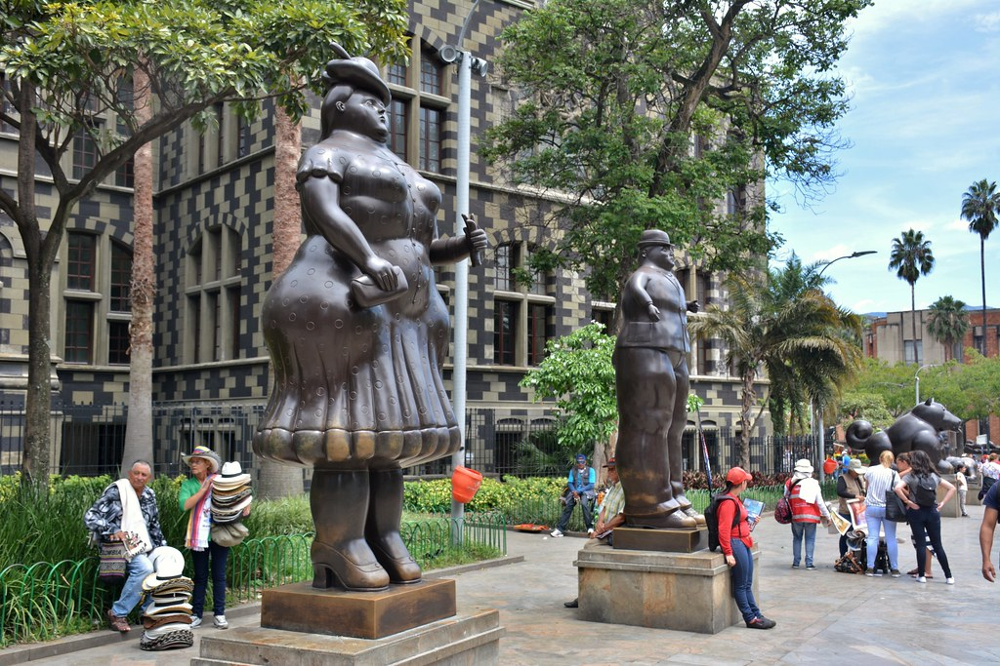

Plaza Botero
Ubicada en el corazón de Medellín, la Plaza Botero es un imprescindible para los amantes del arte y la cultura. Esta rodeada por imponentes esculturas del artista colombiano Fernando Botero, esta plaza es un monumento vivo que rinde homenaje al talento y la creatividad; además es un lugar ideal para tomar fotografías únicas, relajarse y disfrutar del ambiente del lugar.